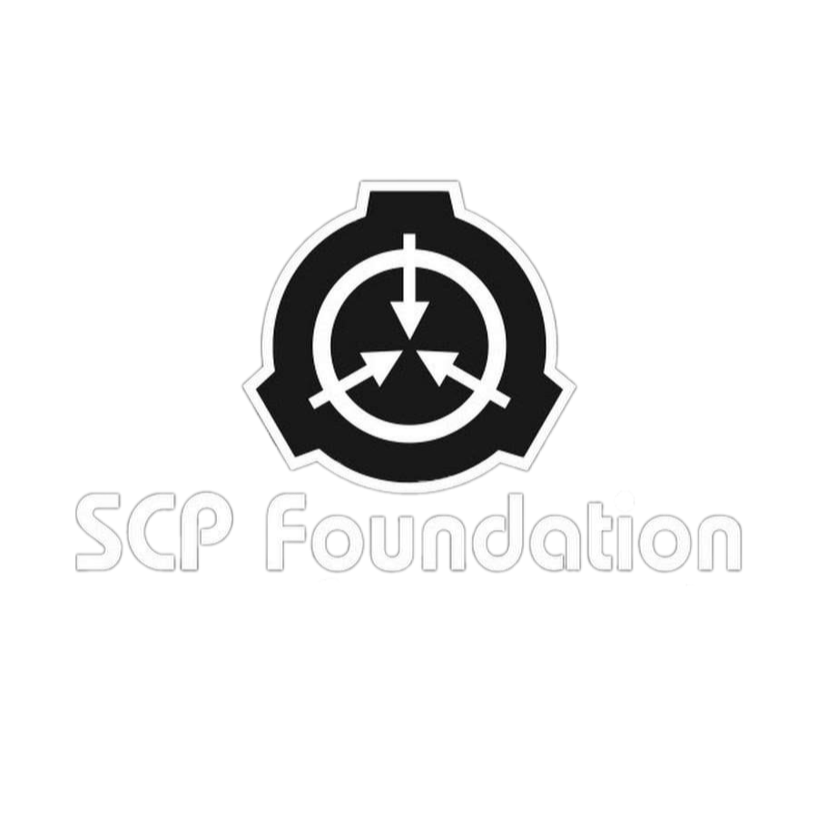
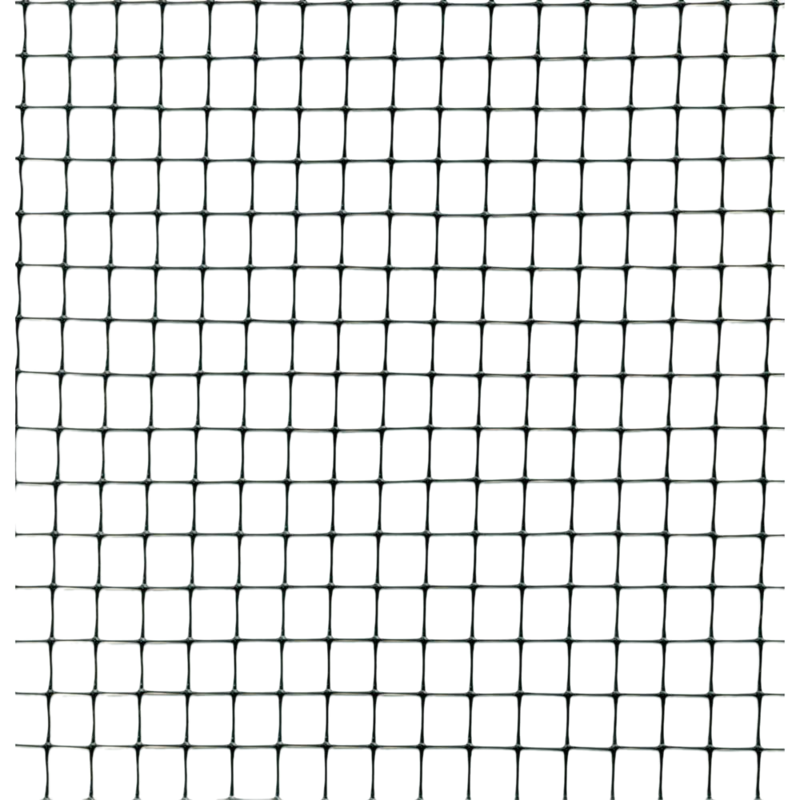
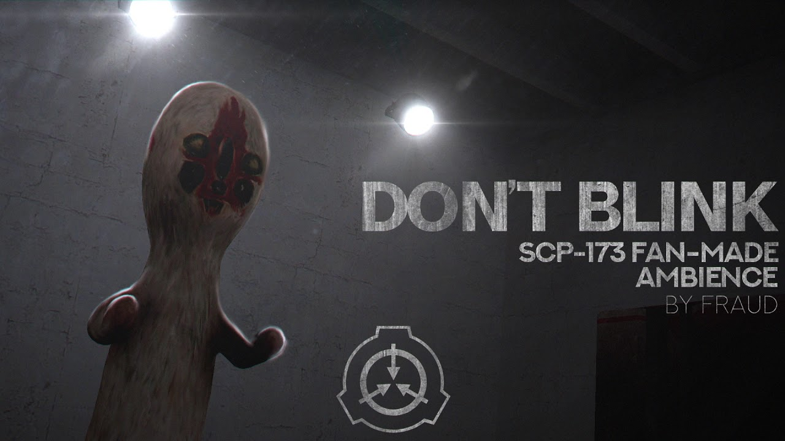

SCP
ARCHIVES
PROTOCOL
CONTAIN
ERROR
ERROR
FILE
ACCESS
INFO
SCP 173
SCP 106
SCP 96
SCP 500
Новый SCP
SCP-1047
В [Местоположение скрыто] было
обнаружено аномальное явление,
впоследствии классифицированное
как SCP-████.
Первоначальный контакт
произошёл 07.10.2024, когда местные
жители сообщили о необычных
звуках и визуальных аномалиях
в радиусе 5 километров
от
центра деревни [Название скрыто].
Прибывшие на место сотрудники
Фонда обнаружили области с
сильными пространственными
искажениями,
в центре которых
находился SCP-████.
REPORT
SCP
Фонд SCP — это тайная международная организация, которая занимается обнаружением, содержанием и изучением
аномальных объектов, существ и явлений, известных как SCP. Основная цель Фонда — защита человечества от угроз, связанных с этими
аномалиями, которые могут нарушить общественный порядок, поставить под угрозу безопасность людей или исказить реальность.
Фонд осуществляет глобальный мониторинг, отслеживая аномальные активности по всему миру, выявляя любые аномалии, которые представляют
собой опасность. Сотрудники Фонда, включая агентов и исследователей, занимаются расследованием сообщений о странных явлениях, часто
вмешиваясь до того, как о них станет известно широкой публике. Если аномалия подтверждена, Фонд инициирует операцию по её изоляции
и транспортировке в одно из специализированных хранилищ.
После захвата и обеспечения безопасности аномальных объектов, Фонд проводит детальное изучение этих SCP, чтобы понять их природу,
свойства и потенциальные риски. Это делается для того, чтобы лучше предсказать их поведение и разработать меры по долгосрочному
содержанию. Любые исследования проводятся в условиях максимальной безопасности, чтобы избежать непредвиденных последствий.